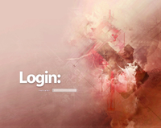
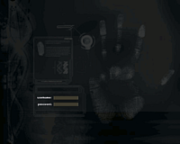

SLiM
Dieser Artikel wurde für die folgenden Ubuntu-Versionen getestet:
Ubuntu 16.04 Xenial Xerus
Ubuntu 14.04 Trusty Tahr
Zum Verständnis dieses Artikels sind folgende Seiten hilfreich:
SliM  ist ein leichtgewichtiger und desktop-unabhängiger Displaymanager. Ein solcher ist dafür verantwortlich, dass sich Benutzer anmelden und unterschiedliche Sitzungen auswählen können. So kann man zum Beispiel steuern, welche Desktop-Umgebung geladen werden soll.
ist ein leichtgewichtiger und desktop-unabhängiger Displaymanager. Ein solcher ist dafür verantwortlich, dass sich Benutzer anmelden und unterschiedliche Sitzungen auswählen können. So kann man zum Beispiel steuern, welche Desktop-Umgebung geladen werden soll.
Das Programm wird nicht mehr weiterentwickelt, was insbesondere bedeutet, dass Fehler nicht mehr korrigiert werden. Unter Umständen kann es erforderlich sein, einen noch in aktiver Entwicklung befindlichen, moderneren Displaymanager zu verwenden.
Installation¶
SliM kann über das folgende Paket aus den offiziellen Paketquellen installiert werden [1]:
slim (universe)
 mit apturl
mit apturl
Paketliste zum Kopieren:
sudo apt-get install slim
sudo aptitude install slim
Bei der Installation wird man gefragt, ob SliM den aktuell verwendeten Displaymanager ersetzen soll. Diese Abfrage kann man jederzeit mit dem Befehl:
sudo dpkg-reconfigure slim
wiederholen.
Benutzung¶
Wenn nach dem Booten die SliM-Oberfläche erscheint, kann man sich durch Eingabe eines Benutzernamens und des zugehörigen Passwortes auf dem System anmelden. Anstelle des Benutzernamens kann man auch einige besondere Schlüsselwörter eingeben, die besondere Ereignisse auslösen:
|  |
| SliM mit Standard-Thema |
| Benutzername | Ereignis |
exit | Beendet SliM |
console | Öffnet eine Konsole |
halt | Herunterfahren des Rechners |
reboot | Neustart des Rechners |
suspend | In den Schlafmodus gehen |
Hat man mehrere Desktop-Umgebungen in SliM eingerichtet, kann man vor der Anmeldung mittels F1 zwischen diesen wählen.
Bildschirmfoto des SLiM Themas machen¶
In der Datei /etc/slim.conf wird durch das Schlüsselwort screenshot_cmd ein Programm für ein Bildschirmfoto definiert. Falls scrot installiert ist, kann man durch Drücken der Taste
F11 ein Bildschirmfoto der SliM-Oberfläche erstellen. Es wird als /root/slim.png abgelegt. Der vollständige Eintrag dazu in der Datei /etc/slim.conf ist:
screenshot_cmd scrot /root/slim.png
Ändert man diesen zu:
screenshot_cmd scrot /tmp/slim-%Y-%m-%d_$wx$h.png
wird ein Bildschirmfoto der Form slim-2015-08-04_1640x1080.png im Verzeichnis /tmp abgelegt.
Konfiguration¶
 Der Großteil der Optionen von SliM kann in der Datei /etc/slim.conf festgelegt werden. Dazu öffnet man sie mit einem Texteditor [2] und Root-Rechten [3].
Themes wählen¶
Um ein anderes Thema für SliM auszuwählen, lädt man dieses zuerst als Archivdatei slim-THEMA.tar.gz von der Projektseite  herunter und entpackt es [4]. Danach kopiert man den entpackten Ordner mit Root-Rechten [3] nach /usr/share/slim/themes/.
herunter und entpackt es [4]. Danach kopiert man den entpackten Ordner mit Root-Rechten [3] nach /usr/share/slim/themes/.
Um das Thema in SliM zu aktivieren, muss man abschließend noch den Ordnernamen des Themas in der slim.conf in der Zeile current_theme angeben. Will man zum Beispiel das Thema "default" benutzen. ändert man die Zeile wie folgt ab:
current_theme default
Gibt man in dieser Zeile mehrere Themes durch Kommata voneinander getrennt an, wählt SliM bei jedem Start eines dieser Themes zufällig aus.
Unterschiedliche Denktopumgebungen einrichten¶
Will man mit SliM zwischen verschiedenen Desktop-Umgebungen wählen - zum Beispiel KDE, GNOME oder Fluxbox - kann man zwischen diesen mit F1 wechseln. Um die Vorgabe zu ändern, kommen je nach Ubuntu-Versionen unterschiedliche Verfahren zum Einsatz.
Ab Ubuntu 14.10¶
Um die Standardsession zu ändern, nutzt man das Alternativen-System:
sudo update-alternatives --config x-session-manager
Bis Ubuntu 14.04¶
In der Datei /etc/slim.conf mit Root-Rechten folgende Zeilen abändern:
login_cmd exec /bin/bash -login ~/.xsession %session
Dann fügt man in der Zeile sessions die Desktop-Umgebungen ein, zwischen denen man wählen möchte. Beispiel:
sessions fluxbox,gnome,KDE
Der erste Eintrag (fluxbox) wird von SliM standardmäßig gestartet, wenn keine Auswahl vom Nutzer getroffen wird.
Jetzt öffnet man die im Homeverzeichnis versteckte Datei .xsession (bzw. legt sie neu an, wenn sie noch nicht existiert) und fügt folgenden Inhalt ein:
#!/bin/sh
DEFAULT_SESSION=fluxbox
case $1 in
fluxbox)
exec startfluxbox
;;
gnome)
exec gnome-session
;;
KDE)
exec startkde
;;
*)
exec $DEFAULT_SESSION
;;
esacBenutzt man eine andere Desktop-Umgebung, muss man die Datei entsprechend anpassen. Jetzt kann man mit F1 auf der SliM-Oberfläche zwischen den Desktop-Umgebungen wechseln.
Automatisch anmelden¶
Dazu ändert man den folgenden Abschnitt in der zentralen Konfigurationsdatei:
auto_login yes
Auflösung ändern¶
Um dem XServer eine andere Auflösung mit auf den Weg zu geben, ändert man in der slim.conf in der Zeile xserver_arguments den Wert hinter -dpi. Für eine Auflösung von 95 Punkten pro Zoll (dpi = dots per inch) sieht sie zum Beispiel so aus:
xserver_arguments -nolisten tcp -dpi 95
Überprüfen kann man die momentane Auflösung vom Terminal [5] aus mit dem Befehl:
xdpyinfo | grep resolution
 Übersichtsartikel
Übersichtsartikel- Erstellt mit Inyoka
-
 2004 – 2017 ubuntuusers.de • Einige Rechte vorbehalten
2004 – 2017 ubuntuusers.de • Einige Rechte vorbehalten
Lizenz • Kontakt • Datenschutz • Impressum • Serverstatus -
Serverhousing gespendet von